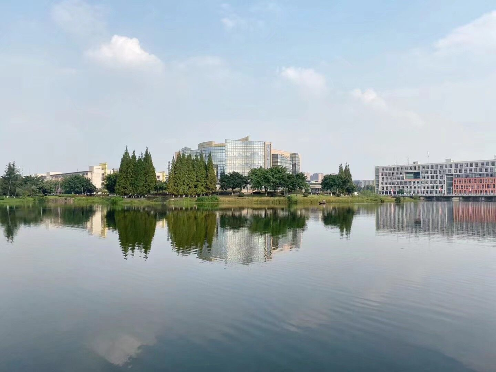

明志致远—明远湖。淡泊以明志，宁静而致远。掐折射出了明远湖的意境—宁静、淡泊。明远湖之水，清澈，宁静，没有任何功利的色彩。明远湖中有荷塘，没有接天莲叶无穷碧的盛况，但却有着莲红荷香的灵动。纵然入冬，残枝之间也透露着傲骨。
湖水由河水和地下水汇聚而成，一阴一阳，阴阳相合，反映了一种和谐的理念和对传统文化的继承。
明远湖风景优美，景色宜人。美哉明远！渌水荡漾，秋波相连。菡萏轻舞，水光潋滟。喜洛水之女神，惊蓬莱之散仙。无洞庭之淼茫，有天池之浩然。银汉横而有畔，水波兴而无边，辉映日月，浩含云天。春秋过而有意，乾坤藏而无言。乃有川流入海，海纳百川，桃李天下，豪杰千万。镜游子之白发，照佳人之朱颜。至若翠竹舞韵，杨柳弄烟。秋月徘徊，春风缠绵。白鹭群飞，蛟龙独潜。日升之湖东，月落之西园。风起于山侧，云生于水端。晨有疏星之晦明，暮有晚霞之绚烂。繁花笑波，芳草依岸。聚华夏之奇才，汇巴蜀之俊彦。

从长桥上可以清楚地看见明远湖中有一个独立的小岛，与旁边的一个小半岛一起并称为情侣岛。两个小岛无论白日黑夜，刮风下雨，都常相厮守，倒是容易让人泛起诗一般的思恋。而之所以每次看见这两个小岛会引起无限的怜惜，是因为这两个小岛平日相见不相连，只有在冬季短暂的枯水期方能相接，恰如牛郎织女只有在七夕才能鹊桥相见……